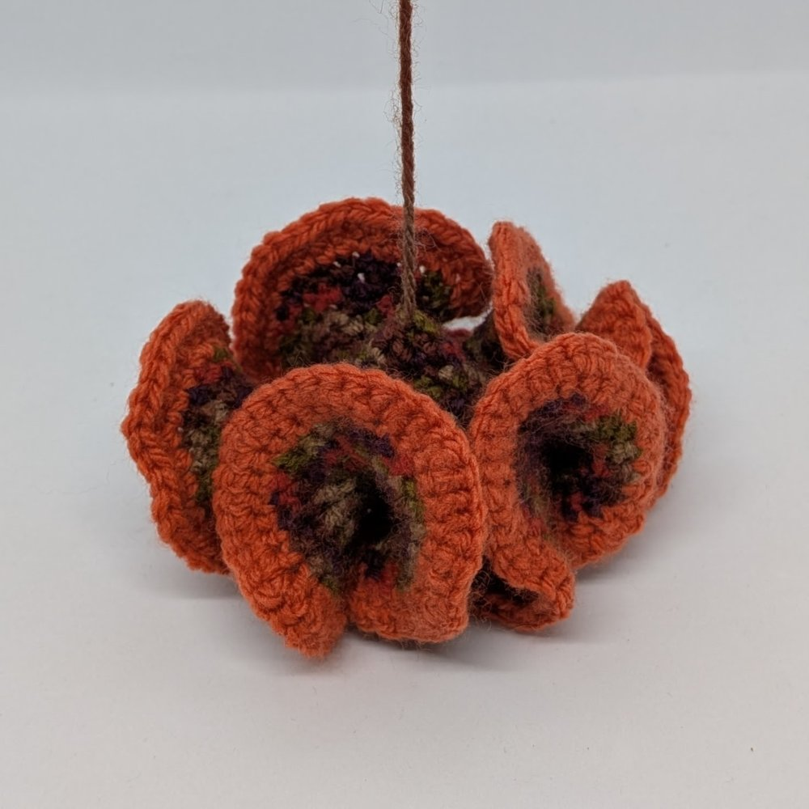

Gallery - Mathematical Fibre Art
While origami will always be my first love, I do have a plethora of other hobbies which keep me entertained from time to time. I have known how to knit and crochet since I was very young (my granny taught me, as many do) but it was only recently that I decided to go a bit deeper and make more than a scarf or basic sampler. The first “real” project I made was Debbie New’s Klein Bottle Hat which called for circular knitting needles – something I never knew existed but am now eternally grateful for! About a year later, around the time I was taking a topology class, I discovered Shiying Dong’s incredible “topological crochet” and after four attempts I finally completed her Saddle Trefoil Knot. By some turn of fate, the lecturer was also into mathematical fibre art (and origami) which was a great source of inspiration, and for now I think that is what I will focus on with this medium.
... read more
Note: click on any of the pictures below for more information.

Designer: Daina Taimiņa
Instructions: Crocheting Adventures with Hyperbolic Planes
Notes: chain 20, increase every 4th stitch

Inspiration: Daina Taimiņa
Notes: chain 40, join loop, two rows normal in either direction then increase every 2nd stitch


Inspiration: Shiying Dong
Notes: chain 75, join loop with one twist, final row with 200 lb fishing line

Designer: Daina Taimiņa
Instructions: Crocheting Adventures with Hyperbolic Planes
Notes: magic loop 6 stitches, increase every 3rd stitch


Designer: Shiying Dong
Instructions: Bridges 2025 Conference Proceedings